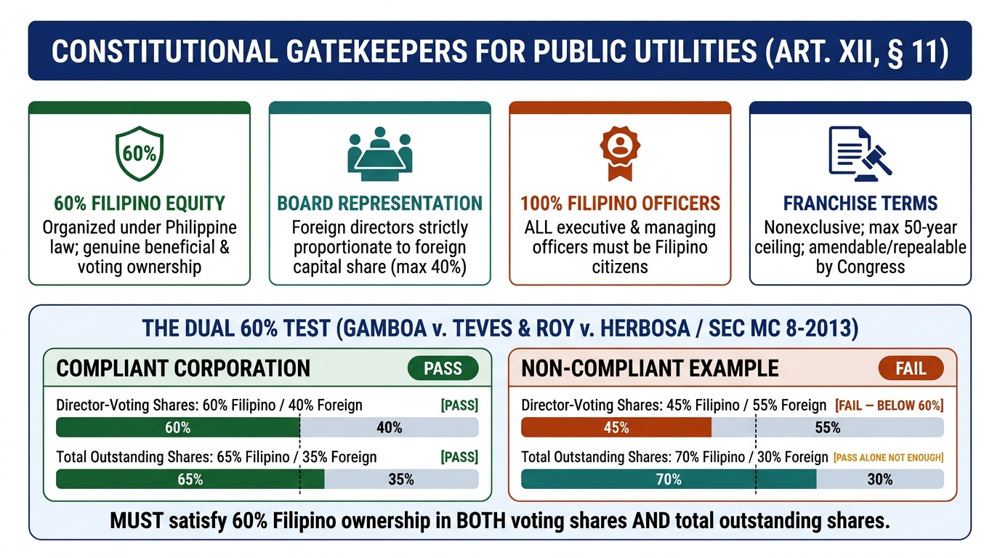
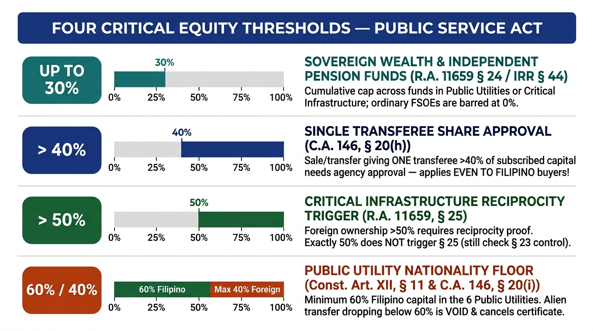

Philippine Public Service Act
Start here · Three services in San Fernando City
Imagine a brownout, a water interruption, and a loss of mobile signal on the same afternoon. The people affected depend on all three services. Yet the company that operates the local electricity distribution network, the operator of the public water pipes, and the company that runs the mobile network can face different rules under the Public Service Act.
Electricity distribution and public water pipeline distribution are public utilities. Telecommunications is a public service expressly classified as critical infrastructure. The labels matter because they answer different questions. A public utility must satisfy the Constitution’s Filipino-ownership requirement. A telecommunications operator faces separate rules on reciprocity, foreign state investment, and national-security review. All three remain subject to their applicable operating and service rules.
Sources: R.A. No. 11659, §§ 2, 4, 23–26 · 2023 IRR, §§ 4–11, 32–48
What does the law do? It governs who may operate certain services, under what authority, and what duties they owe the public. It also tells regulators when they may review fares, rates, routes, transfers, and service failures. C.A. No. 146 originally worked through the Public Service Commission. Sector agencies now exercise its transferred powers. In 2022, R.A. No. 11659 specified which public services count as public utilities and set safeguards for investment. That allowed greater foreign participation in some sectors while preserving oversight and addressing national-security risks.
Sources: C.A. No. 146 as amended before R.A. No. 11659 · R.A. No. 11659, §§ 1, 3–4
Start an exam answer with the activity. What does the entity actually operate, manage, or control? Then identify the investor, the proposed ownership or control, and the authorization or approval that applies.
The 2027 Bar topics at a glance
| Topic in the supplied syllabus | Question it answers | Where to read |
|---|---|---|
| Public Service as Public Utility | Does the service fall within one of the six statutory activities? | C.A. No. 146, § 13(b), (d)–(e). Constitution, Art. XII, § 11 |
| Critical Infrastructure | Is the public service vital to national security under the Act or a presidential designation? | R.A. No. 11659, § 2(e), (m). IRR, §§ 32–34 |
| Suspensive and Prohibitory Powers of the President | Can the President stop a proposed deal that would give a foreign party control? | R.A. No. 11659, § 23. IRR, §§ 35–43 |
| Foreign Government or State-Owned Enterprise Investments | Is this investor barred from acquiring even a minority stake? | R.A. No. 11659, §§ 2(g), 24. IRR, § 44 |
| Reciprocity | What must a foreign investor establish to own more than 50% of a critical infrastructure operator? | R.A. No. 11659, § 25. IRR, § 45 |
The topics above follow the syllabus excerpt supplied with the notes.
Sources: Supreme Court 2027 Bar page · Bar Bulletin No. 1-2027
How the citations work. The amendment and the underlying Act each have their own section numbers. Section 23 of R.A. No. 11659 concerns presidential investment review. Section 23 of C.A. No. 146, as amended by § 12 of R.A. No. 11659, concerns offenses and contains the service-interruption provision. Likewise, § 24 of R.A. No. 11659 concerns foreign state investment, while § 24 of C.A. No. 146 concerns the knowing and willful commission of prohibited acts. The 2022 Act and 2023 IRR use NEDA. R.A. No. 12145 later reorganized NEDA into the Department of Economy, Planning, and Development (DEPDev).
Sources: R.A. No. 11659 · DEPDev legal mandates
1. Public Service as Public Utility
What makes an activity a public service?
Under § 13(b) of C.A. No. 146, ask whether a person owns, operates, manages, or controls a covered activity in the Philippines for hire or compensation and for general business purposes. The list includes carriers, railways, motor vehicles, shipping and ferries, certain port and refrigeration facilities, water and electricity, communications, broadcasting, and similar services. The statute permits both general and limited clientele and covers permanent, occasional, or accidental service. A limited list of customers or an occasional trip can therefore satisfy the definition if the facts establish a covered activity for a general business purpose.
Source: R.A. No. 2677, § 4
La Union application. Suppose a company based near Poro Point uses a tug to move cargo for three regular commercial clients for a fee. Its limited clientele alone does not remove the activity from § 13(b). Compare a Bacnotan farmer who owns a truck and, under a special arrangement for a limited time, lets another farmer operate it to haul the latter’s harvest. The agricultural proviso can apply if the parties fall within its terms and the use is directly tied to the specified farming purpose. A separate trucking business offered for hire calls for a different analysis.
Source: C.A. No. 146, § 13(b), as amended by R.A. No. 2677
Two older cases show why the underlying activity matters. In Bureau of Telecommunications v. PSC, the Bureau’s then-existing paid service to private subscribers was incidental to its governmental work on the facts, so the Court found no general business purpose. In Cruz de Syquia v. Board of Power and Waterworks, a landlord’s billing dispute over electricity supplied by Meralco was a lease matter on the facts. Allocating costs did not make the administrator an independent distributor. A government-owned entity that does operate a public service is subject to regulation under amended § 13(a).
Sources: Bureau of Telecommunications, G.R. No. L-27412 · Cruz de Syquia, G.R. Nos. L-42783–85 · R.A. No. 11659, § 4
Which public services are public utilities?
A public utility is a public service that operates, manages, or controls one of these six activities for public use. The law expressly includes concessionaires, joint ventures, and similar entities that wholly operate, manage, or control such an activity for public use.
| Statutory activity | What to look for | La Union illustration or exam example |
|---|---|---|
| Electricity distribution | The local network that conveys power to end-users | La Union Electric Company, Inc. (LUECO) has a legislative franchise covering San Fernando City, Bauang, and San Juan. La Union Electric Cooperative, Inc. (LUELCO) is a separate entity and also serves parts of the area. |
| Electricity transmission | The high-voltage backbone that moves bulk power | In a hypothetical service interruption, distinguish the high-voltage line feeding the distribution system from the local lines serving homes and shops along the city’s streets. |
| Petroleum and petroleum products pipeline transmission | Pipeline transmission supplying the public. The definition excludes lines exclusively for private or own use, or incidental to a separate business. | Suppose a Poro Point industrial facility has a pipe solely to move fuel between its own tanks. Compare that with an operator that supplies the public through a petroleum pipeline system. Both are hypothetical. |
| Water pipeline distribution and wastewater pipelines | Public potable-water distribution and wastewater or sewerage pipelines. The statutory definition excludes desludging companies and septic tanks. | The provincial government identifies Lon-oy, San Gabriel, and Cadaclan, San Fernando City, as sources for the Metro San Fernando Water District. The legal category concerns the piped distribution service. |
| Seaports | The place and related facilities where ships berth or anchor for activities such as loading and unloading | San Fernando International Seaport in the Poro Point Freeport Zone. Managing the seaport is a different activity from operating a domestic shipping line that calls there. |
| Public Utility Vehicles (PUVs) | Under this Act, covered internal-combustion vehicles carrying passengers or domestic cargo for a fee and serving the public. The list includes trucks-for-hire, UV Express, public utility buses and jeepneys, tricycles, filcabs, and taxis. | A conventional tricycle for hire in San Fernando City illustrates the category. The Act expressly excludes vehicles accredited with and operating through a transport network corporation from its PUV definition. Apply other transport laws and rules separately. |
Sources: R.A. No. 11659, §§ 2, 4 · LUECO franchise, R.A. No. 9385 · LUECO service coverage · Province of La Union, Central Circuit · PPMC seaport notice · San Fernando City tricycle franchise
Memory aid. Group the six into two electricity activities (distribution and transmission), two pipeline activities (petroleum and water/wastewater), and two transport activities (seaports and PUVs). For a separate example, compare an electric generator with a distributor. Generation produces the electricity. Distribution conveys it to end-users. EPIRA expressly treats generation as outside the public utility operation category.
Sources: R.A. No. 11659, § 4 · EPIRA, R.A. No. 9136, § 6

Who can add a public utility?
Congress must act by law. Under § 13(e), the President may recommend classification to Congress upon the recommendation of NEDA, now DEPDev. The four criteria are:
- regular supply, transmission, and distribution to the public through a network of a commodity or service of public consequence,
- a natural monopoly that needs regulation in the common good,
- necessity for the maintenance of life and occupation of the public, and
- an obligation to provide adequate service on public demand.
A natural monopoly can meet market demand at a lower cost with one provider than with two or more. The President’s power to designate critical infrastructure follows a different procedure.
Sources: C.A. No. 146, § 13(d)–(e), as amended · 2023 IRR, §§ 10–11, 32–34
What changes once an activity is classified as a public utility?
Under Art. XII, § 11 of the 1987 Constitution, authority to operate may be granted to Filipino citizens or to corporations or associations organized under Philippine law with at least 60% Filipino-owned capital. Foreign investors’ representation on the governing body is limited to their proportionate capital share. All executive and managing officers must be Filipino citizens. The authorization is nonexclusive, lasts no longer than 50 years, and remains subject to congressional amendment, alteration, or repeal when the common good requires. The State must encourage public equity participation.
Source: 1987 Constitution, Art. XII, § 11

- Voting and beneficial ownership. Under Gamboa and Roy, read with SEC Memorandum Circular No. 8, s. 2013, apply the required Filipino ownership percentage to both total outstanding shares entitled to vote for directors and total outstanding shares, voting or otherwise. The Filipino ownership must be genuine. Example: If Filipinos hold 70% of the aggregate outstanding shares but only 45% of the director-voting shares, the corporation fails.
- Operating a service and owning equipment. In Tatad v. Garcia, the government ran the rail service and collected fares, while the private entity owned the facilities and equipment used by the government. Focus on who actually runs the service and controls its delivery. For a Poro Point hypothetical, a company that merely leases cranes poses a different question from a concessionaire managing and controlling the public seaport. Check the contract and the actual functions. Tatad predates the 2022 classification of railways.
Source: Tatad v. Garcia, G.R. No. 114222
- Nonexclusivity and competition. Tawang Multi-Purpose Cooperative v. La Trinidad Water District struck down the statutory requirement that effectively gave an incumbent district a veto over new water franchises in its service area. Nonexclusivity still allows screening for public convenience and capacity. Under Art. XII, § 19, the State may regulate or prohibit monopolies when the public interest requires, and combinations in restraint of trade and unfair competition are barred.
- Term and renewal. For authorizations granted by agencies under the Act, § 31 of R.A. No. 11659 also sets a 50-year ceiling and provides priority in renewal for exemplary service and substantial investment in infrastructure, technology, or equipment. The agency still evaluates the application.
Source: R.A. No. 11659, § 31
Two cases for the class report. In Telecommunications and Broadcast Attorneys of the Philippines v. COMELEC, the Court upheld the requirement for broadcasters to provide free airtime for elections under the law then before it. The case illustrates franchise obligations in the public interest. In Oroport Cargohandling Services v. PHIVIDEC, the Court examined a single cargo-handling operator in a government-run port and distinguished the arrangement from prohibited monopoly or unfair competition. Apply the port’s governing law and the particular activity, since providing one service inside a port and operating the public seaport are different inquiries.
Sources: Telecommunications and Broadcast Attorneys, G.R. No. 132922 · Oroport, G.R. No. 166785
2. Critical Infrastructure
Why have another category? A mobile or backbone network can support emergency communications, hospital referrals, transactions, and government services. If such a network were disabled, the consequences could extend beyond its subscribers. That potential impact explains the security rules.
Legal test. Under § 2(e) of R.A. No. 11659, a critical infrastructure public service owns, uses, or operates physical or virtual systems or assets whose incapacity or destruction would harm national security. Telecommunications is expressly included. The President can designate other vital public services by executive order under the IRR. The critical infrastructure rules apply prospectively to a newly designated service. The Act’s telecommunications definition excludes specified passive infrastructure such as poles, fiber ducts, and dark fiber cables, and value-added services as defined in R.A. No. 7925. Identify the activity before treating a tower owner, passive infrastructure provider, or value-added service as the operator of a telecommunications service.
Sources: R.A. No. 11659, § 2(e), (h), (m) · 2023 IRR, §§ 32–34
Poro Point example. BCDA identifies an international cable landing station in Poro Point, San Fernando City, as part of the Luzon Bypass Infrastructure. The physical station helps explain how a telecommunications network connects to infrastructure beyond La Union. Use the location as context. In a hypothetical acquisition, specify that the target operates the telecommunications network if you want the statutory critical-infrastructure rule to apply on those facts.
Source: BCDA, Luzon Bypass Infrastructure terms of reference
| Duty | How it works |
|---|---|
| Service interruption | For a complaint about an interruption, the operator must act within 10 calendar days from receipt or provide a plan to be completed within a reasonable time. It reports interruptions, complaints, and actions to its regulator monthly. |
| Information security | Telecommunications businesses must obtain and maintain the applicable DICT-prescribed ISO information-security certifications from an accredited body. The statute exempts covered micro, small, and medium enterprises from this specific requirement. |
| Independent audit | Regulators ensure annual performance audits. Audits of critical infrastructure and public utilities also cover matters such as risk assessment, emergency response, and cybersecurity. Three consecutive annual audit failures may justify a certificate’s suspension or revocation. |
Sources: C.A. No. 146, §§ 16(p), 23, as amended · R.A. No. 11659, §§ 26 and 29 · 2023 IRR, §§ 19, 47–48
3. Suspensive and Prohibitory Powers of the President
Under § 23 of R.A. No. 11659, the President may suspend or prohibit a proposed merger, acquisition, or investment in a public service when it effectively grants direct or indirect control to a foreigner or foreign corporation and intervention is warranted in the interest of national security. The relevant department or agency first reviews and evaluates the transaction and submits a recommendation. The President has 60 calendar days from receipt of that recommendation. Under IRR §§ 35–38, the review examines both the transfer of foreign control and national-security implications. The parties may voluntarily declare a covered transaction, or the agency may initiate review on its own. The Philippine Competition Commission’s merger-review authority also remains applicable when triggered.
Sources: R.A. No. 11659, § 23 · 2023 IRR, §§ 2(f), 35–43
Control can exist below 50%. Suppose a private foreign investor seeks 45% of a domestic telecommunications operator serving La Union and receives contractual power to appoint most directors. The stake falls below the § 25 reciprocity trigger. The board rights can still confer control. If the transaction has national-security implications, § 23 review can apply. Equity percentage, board rights, and management agreements can produce different answers.
Source: 2023 IRR, definition of control and §§ 35–39
Three public powers worth distinguishing
| Power | Trigger and legal effect |
|---|---|
| Investment suspension or prohibition · R.A. No. 11659, § 23 | The President may stop a qualifying proposed transaction following agency review and recommendation in the interest of national security. |
| Temporary emergency takeover · Constitution, Art. XII, § 17, read with Art. VI, § 23(2) | During a national emergency and under the requisite legislative authority, the State can temporarily take over or direct the operation of a privately owned public utility or other business affected with public interest, on reasonable terms. David v. Macapagal-Arroyo explains that declaring an emergency alone supplies no takeover authority to the President. |
| Transfer to public ownership · Constitution, Art. XII, § 18 | The State may transfer utilities and other private enterprises to public ownership in the interest of national welfare or defense, subject to just compensation. |
Sources: 1987 Constitution · David v. Macapagal-Arroyo, G.R. No. 171396 et al. · R.A. No. 11659, § 23

4. Foreign Government or State-Owned Enterprise Investments
Identify who is behind the investor. Under § 2(g) of R.A. No. 11659, a foreign state-owned enterprise (FSOE) is an entity in which a foreign state meets any of these tests:
- Directly or indirectly owns more than 50% of capital, taking voting rights and beneficial ownership into account.
- Through ownership interests, controls the exercise of more than 50% of voting rights.
- Can appoint a majority of directors or members of an equivalent management body.
Apply § 24 to new investments. A covered foreign government, FSOE, or entity controlled by or acting on behalf of one generally cannot own capital in a public utility or critical infrastructure through a new investment. Existing covered holdings may be retained subject to the statutory and IRR rules, while additional capital investment is barred. A qualifying sovereign wealth fund and an independent pension fund of a foreign state may collectively hold up to 30% under the statutory exception. IRR § 44 also caps the cumulative investment of such funds across sources at 30% in the covered service and requires proof of standards compliance from sovereign wealth funds. Any applicable public-utility nationality limit still operates. Section 24 and its IRR also restrict covered entities’ information disclosure and assistance, support, or cooperation with foreign governments and their instrumentalities or agents.
Sources: R.A. No. 11659, §§ 2(g), 24 · 2023 IRR, §§ 2, 44
La Union application. An ordinary operating company wholly owned by a foreign government proposes to buy 10% of a domestic telecommunications operator serving San Fernando City. It is a new investment and the investor is an FSOE. It is barred under § 24. The same provision bars a new stake by that FSOE in a public seaport operator. In both examples, the prohibition follows from the identity of the investor and the sector, even at a small percentage.

5. Reciprocity
Plain English. If a foreign investor wants to own more than half of a Philippine critical infrastructure operator, the law asks what comparable investment rights Filipinos have in the investor’s home country.
Under § 25 of R.A. No. 11659, foreign nationals cannot own more than 50% of the capital of an entity operating and managing critical infrastructure unless their country accords reciprocity to Philippine nationals under foreign law, treaty, or international agreement. Rights of similar value in other economic sectors can qualify. IRR § 45 describes ways to establish similar rights and requires documentary proof. The relevant administrative agency checks proof for an existing entity, and the SEC checks it for an entity still being registered. Exactly 50% does not cross the § 25 threshold. A qualifying deal that grants foreign control may still trigger § 23 review, and the § 24 prohibition still applies to covered state-linked investors.
Sources: R.A. No. 11659, §§ 23–25 · 2023 IRR, §§ 35–45
La Union application. A private foreign company wants 65% of a domestic telecommunications operator serving San Fernando City. If reciprocity is unproved, § 25 bars the proposed percentage. If reciprocity is proved, the transaction clears that requirement. Check separately for national-security review, applicable transaction approvals, and the operator’s sector-specific authority. If the target is a public electricity distributor, the constitutional 60% Filipino ownership floor independently rules out the proposed stake.
Foreign employment is a separate part of § 25. Subject to exceptions provided by law or an international agreement, a public service may employ a foreign national only after determining that a competent, able, and willing Philippine national is unavailable. The employment permit rules apply. For industries determined by DOLE, public services employing permit holders must also implement an understudy or skills development program. A public utility remains subject to the Constitution’s Filipino-citizenship requirement for executive and managing officers.
Sources: R.A. No. 11659, § 25 · 2023 IRR, § 46
Four numbers to keep straight
| Number | Legal question |
|---|---|
| 60% Filipino / 40% foreign | Does the corporate public utility satisfy the constitutional nationality rule? |
| More than 50% foreign | Does a foreign investor in a critical infrastructure operator need to prove reciprocity? |
| Up to 30% | Is an investment by qualifying sovereign wealth and independent pension funds within the special exception and IRR limits? |
| More than 40% to one transferee | Does a transfer or registration of shares trigger agency approval under C.A. No. 146, § 20(h)? This threshold measures the resulting holding of the transferee and can apply to a Filipino transferee. |
A public service outside the six public utility activities may be open to up to 100% foreign equity where the governing law permits. Check critical-infrastructure rules, national-security review, the sector and franchise, and any other applicable restriction. The 100% figure describes a possibility after those checks.
Sources: 1987 Constitution, Art. XII, § 11 · R.A. No. 11659, §§ 4, 23–25 · C.A. No. 146, § 20(h), as amended · E.O. No. 113, s. 2026, 13th Regular Foreign Investment Negative List

Part I Summary Brief Reviewer — 2027 Bar Core: Classification & Foreign Investment Rules (Sections 1–5)
Module Recap- Public Service vs. Public Utility: C.A. No. 146, § 13(a), (b), (d), (e); R.A. No. 11659, §§ 2, 4, 31; 1987 Constitution, Art. XII, §§ 11 & 19 (including Gamboa, Roy, Tatad, Tawang).
- Critical Infrastructure & Security Duties: R.A. No. 11659, §§ 2(e), (h), (m), 26, 29; C.A. No. 146, §§ 16(p), 23; 2023 IRR, §§ 19, 32–34, 47–48.
- Presidential Suspensive/Prohibitory Power vs. Constitutional Powers: R.A. No. 11659, § 23; 2023 IRR, §§ 35–43; Constitution, Art. XII, §§ 17–18 & Art. VI, § 23(2) (David v. Arroyo).
- Foreign Government / FSOE Ban & Sovereign Wealth Exception: R.A. No. 11659, §§ 2(g), 24; 2023 IRR, §§ 2, 44.
- Reciprocity, Foreign Employment & Equity Thresholds: R.A. No. 11659, § 25; 2023 IRR, §§ 45–46; C.A. No. 146, § 20(h)–(i).
| Mnemonic | Tag | Stands For / Legal Application |
|---|---|---|
| 2-2-2 Rule (Two Electricity, Two Pipelines, Two Transport) | Lecture | The 6 Exclusive Public Utilities (§ 13(d)): Electricity Distribution & Transmission; Petroleum & Water/Wastewater Pipelines; Seaports & PUVs (excluding TNCs). |
| C-V-B (>50% Capital, >50% Voting, Board Majority) | Study Aid | The 3 alternative tests making an entity a Foreign State-Owned Enterprise (FSOE) under R.A. No. 11659, § 2(g). |
| 30 – 40 – 50 – 60 Ladder | Study Aid | 30% SWF/Pension cumulative cap (§ 24) → >40% single-transferee approval (§ 20(h)) → >50% critical infrastructure reciprocity (§ 25) → 60% Filipino floor for Public Utilities (Art. XII, § 11). |
| 10 – 3 – 60 Deadlines | Study Aid | 10 calendar days to act on service interruption complaint (§ 23 C.A. 146); 3 consecutive annual audit failures for revocation (§ 16(p)); 60 calendar days for President to suspend/prohibit after agency recommendation (§ 23 R.A. 11659). |
- Public Service Test (§ 13(b)): Owns, operates, manages, or controls a covered activity in the Philippines for hire or compensation and for general business purposes (even with limited clientele or occasional service).
- Dual 60% Public Utility Rule (Gamboa / Roy): At least 60% Filipino ownership must apply to both total director-voting shares AND total outstanding shares; ALL executive and managing officers must be Filipino; max 50-year nonexclusive term; only Congress by law can add a new public utility (upon Presidential/DEPDev recommendation).
- Critical Infrastructure (§ 2(e)): Expressly includes telecommunications (excluding passive infrastructure & VAS); other vital services require Presidential EO (prospective effect).
- Control Below 50% (§ 23): Board appointment rights or management contracts can trigger Presidential national-security suspension/prohibition even when foreign equity is ≤ 50%.
- Confusing Section 23/24 Numbers: R.A. 11659 §§ 23–24 = Presidential review & FSOE bar; C.A. 146 §§ 23–24 = offenses, service-interruption duty & knowing/willful prohibited acts.
- Treating Reciprocity as a Cure for Public Utilities or FSOEs: Reciprocity (§ 25) never overrides the constitutional 60% Filipino floor for the 6 Public Utilities and never cures the § 24 FSOE prohibition (even for a 5%–10% stake).
- Misapplying the >50% Trigger to Exactly 50%: Exactly 50% foreign equity in critical infrastructure does not trigger § 25 reciprocity, but still check § 23 control review if board/management rights confer control.
- Confusing Exclusions: Power generation (EPIRA), desludging/septic tanks, private-use petroleum pipes, TNC-accredited vehicles, and passive telecom infrastructure / VAS fall outside their respective Public Utility or Telecommunications definitions.
6. Who regulates the service and who authorizes it?
The regulator follows the activity
The State uses its police power to protect the people who depend on these services. Property used to provide services to the public can be subject to oversight of matters such as safety, continuity, and reasonable rates. Article XII, § 6 recognizes the social function of property. Under § 3 of R.A. No. 11659, the agencies that inherited Public Service Commission functions exercise them under their own mandates. The same general regulatory standard applies to covered services operated by Philippine government entities and private operators.
Sources: 1987 Constitution, Art. XII, § 6 · R.A. No. 11659, §§ 3–4
| Activity | Where to start |
|---|---|
| Electricity distribution or transmission | Energy Regulatory Commission (ERC) for sector regulation such as regulated electricity rates. Department of Energy (DOE) for energy policy. |
| Public piped water or sewerage | Check the operator, charter, and issue. Local Water Utilities Administration (LWUA) has functions involving local water districts. National Water Resources Board (NWRB) has water-resource and other assigned regulatory functions. MWSS has a separate charter for its service area. |
| Bus, jeepney, or taxi operations | Land Transportation Franchising and Regulatory Board (LTFRB) for franchises, routes, or fares. Land Transportation Office (LTO) for vehicle registration and driver licensing. |
| Tricycle for hire within San Fernando City | The city government administers the local franchise. In the Local Government Code this authority is exercised through the sangguniang panlungsod, subject to national transport guidelines. |
| Domestic shipping or seaport | Maritime Industry Authority (MARINA) for domestic shipping. For a seaport, check the relevant port authority and its charter. At Poro Point, the published turnover notice identifies BCDA and PPMC for operation, management, and development of the San Fernando International Seaport. |
| Air services | Civil Aeronautics Board (CAB) for economic regulation. Civil Aviation Authority of the Philippines (CAAP) for aviation safety and its other functions. |
| Telecommunications, broadcasting, or tollways | National Telecommunications Commission (NTC) for the assigned communications and broadcasting matters. Department of Information and Communications Technology (DICT) for its policy and other statutory functions. Toll Regulatory Board (TRB) for its statutory tollway functions. |
Section 3 also lists DENR, DOTr, and PNR among the agencies to which powers or duties have been transferred by law. The exact power in a given case still comes from the relevant statute.
Sources: R.A. No. 11659, § 3 · Local Government Code, §§ 447 and 458 · City tricycle franchise procedure · PPMC seaport notice
Legislative franchise, CPC, CPCN, and provisional authority
| Instrument | What it does |
|---|---|
| Legislative franchise | A law passed by Congress authorizing the grantee to undertake the stated activity, subject to conditions. LUECO’s distribution franchise is a local example. |
| Certificate of Public Convenience (CPC) | Agency authorization to provide a public service under stated terms. A bus operating authority for a defined route illustrates its function. |
| Certificate of Public Convenience and Necessity (CPCN) | An authorization used where the governing scheme provides for it. The 2022 Act still includes CPCNs in its definition of certificates. The distinction between a CPC and a CPCN depends on the applicable statute and sector. |
| Concession | A contract granting operating, development, financing, or related rights over concession assets under its terms and the governing law. |
| Provisional authority | Interim permission to operate while the agency resolves the main application, subject to the sector’s criteria, conditions, and expiration date. A technical permit for equipment or a frequency serves its own function. |
When is a congressional franchise required? Read the enabling law. C.A. No. 146, § 13(a), recognizes congressional authority and existing delegations to agencies. EPIRA § 27 generally places transmission and distribution franchises with Congress, subject to its terms. In Philippine Airlines v. CAB, the Court recognized CAB’s statutory authority to issue the relevant authorization for domestic air transport. Albano v. Reyes illustrates statutory delegation in port operations. For data transmission, the later Konektadong Pinoy Act provides an NTC authorization framework for covered participants. Check the operator’s specific activity and statute before assuming the same franchise rule applies to broadcasting, voice telephony, and data transmission.
Sources: R.A. No. 11659, §§ 2(b), 4–6 · R.A. No. 9385 · Philippine Airlines v. CAB, G.R. No. 119528 · Albano v. Reyes, G.R. No. 83551 · R.A. No. 12234
A typical CPC application asks three questions.
- Is the applicant legally eligible? For corporate and similar applicants, § 16(a) requires organization under Philippine law. The IRR also recognizes persons allowed under the Act and applicable laws. Apply any nationality rule separately, including the 60% Filipino ownership rule for corporate public utility operators.
- Can the applicant deliver the service? Check the applicable financial, technical, safety, and operating requirements.
- Will the service promote public convenience? For a proposed bus route from San Fernando City to Bacnotan, useful evidence might show overcrowding, underserved hours, or inadequate capacity, alongside a credible plan to meet the demand. The applicant must establish public need under the governing standard.
The prior operator rule can give a qualified, adequately performing incumbent a preference to meet increased demand. Inadequate service, material violations, or failure to respond to demand can defeat that preference. Earlier filing and the presence of multiple operators are factors under applicable allocation rules. Public convenience and the relevant sector rules govern the result. A CPC can have commercial value and be the subject of a transaction, but its exercise and transfer remain conditional. Approval may come with requirements on service, routes, equipment, or schedules. Certificate exemptions are sector-specific. Read §§ 14–18 with later statutes, exemptions expressly stated in a franchise, and the rules of the relevant agency. Older provisions on warehouses, certain small conveyances, radio, air services, and government operators do not settle current licensing questions by themselves.
Sources: C.A. No. 146, §§ 14–18 · R.A. No. 11659, §§ 4–8 · 2023 IRR, §§ 7–9 and 15 · Kilusang Mayo Uno Labor Center v. Garcia, G.R. No. 115381
A useful distinction from older cases. People v. Quasha addressed incorporation before the application for authority to operate. For an exam, separate organizing a corporation from qualifying to operate a particular service. At the authorization stage and throughout operation, apply the governing eligibility and ownership rules.
Sources: People v. Quasha, G.R. No. L-6055 · 1987 Constitution, Art. XII, § 11
7. Which actions need approval?
Under § 20 of C.A. No. 146, start with the kind of transaction and check any sector-specific law. The following distinctions matter:
| Action | Rule to apply |
|---|---|
| Set or change regulated rates, fares, or covered itineraries | § 20(a) requires agency approval. The proposer bears the burden of showing the proposal is prudent and efficient. Notice and an opportunity to be heard generally apply. |
| Build or extend facilities | § 20(b) generally requires approval. Emergency or extraordinary projects may proceed under the statutory exception, with an application filed within 60 days from implementation. A regulator may prescribe a shorter period for a certified emergency under the provision. Inclusion in the rate base separately depends on the asset being useful and necessary and on agency approval. |
| Abandon or change certain railroad operations | § 20(c) specifically addresses matters such as abandoning a railroad station, discontinuing specified ticket or freight services, or making permanent railroad timetable or itinerary changes. A bus route or another sector’s service must be checked under its own authorization and rules. |
| Issue shares without par value | § 20(e), as amended, requires approval and a hearing. |
| Transfer or mortgage operating property, transfer an authority, or merge | § 20(g) covers the listed transactions involving operating property, franchises, certificates, privileges, and rights. For property sales, alienations, mortgages, encumbrances, and leases, the property must be used and useful in delivering the required public service. Read the public notice and hearing rules, the one-year maturity language for mortgages or encumbrances, and the provisos on negotiation or completion before approval and ordinary-course property transactions. |
| Transfer or register shares resulting in more than 40% to a transferee | § 20(h) counts the sale by itself or together with earlier sales and measures the transferee’s holding against subscribed capital. Approval to transfer shares and consent required by a specific legislative franchise are separate questions. |
| Transfer shares to an alien so that Filipino ownership in a public utility falls below 60% | § 20(i) makes the transfer void and a sufficient ground to order cancellation of the certificate. |
Sources: C.A. No. 146, § 20 and unchanged subsections · R.A. No. 11659, § 10 · 2023 IRR, § 17
La Union application. A San Fernando–Bauang bus operator agrees to sell a bus and assign its operating authority. The agreement may create rights and obligations between the parties. The buyer still needs the required approval to operate under the transferred authority. Under the registered-owner rule, a private sale by itself generally does not relieve the registered vehicle owner of liability to third persons following an accident. Any claim for reimbursement between seller and buyer is a separate matter. Speculation in certificates for resale, sometimes called trafficking in CPCs, also defeats the public-service purpose of a grant and can support denial or cancellation under the applicable rules.
Sources: C.A. No. 146, § 20(g) · Registered-owner rule in Filcar Transport Services v. Espinas, G.R. No. 174156
8. How are rates set and service standards enforced?
Fair and reasonable rates. Under § 16(c), regulated rates should let the provider recover prudent and efficient costs and earn a reasonable return, while protecting consumers against unreasonable price or unjust discrimination. The regulator must retain its rate-setting power. In Kilusang Mayo Uno v. Garcia, the Court invalidated a scheme allowing bus operators to adjust their fares themselves within an authorized band. In Republic v. Meralco, the Court excluded corporate income tax from the operating expenses used to compute the rates in that case. Section 16(l) also governs any required depreciation account and restricts the uses of a depreciation fund. Billing and metering disputes may turn on the authorized tariff, equipment tests, and sector-specific rules.
Sources: C.A. No. 146, §§ 16(c), 16(l), 19–20 · Kilusang Mayo Uno v. Garcia · Republic v. Meralco, G.R. No. 141314
Provisional rates and deregulation. The agency may provisionally approve a proposed rate without a prior hearing under § 16(c). It must call a hearing within 15 days thereafter, upon publication and notice to affected parties. Section 16(c) preserves deregulation under applicable statutes and rules, including regimes for certain activities in telecommunications, downstream oil, electricity generation and supply, and domestic shipping. The provision also refers to the former BOT Law. R.A. No. 11966 repealed that law and directs that statutory references to it be read as references to the PPP Code, subject to applicable transition rules.
Sources: R.A. No. 11659, § 6 · R.A. No. 11966, §§ 35 and 37
Unlawful acts under § 19. These include providing unsafe, improper, or inadequate service or withholding service reasonably demanded, granting undue preferences or discriminatory rebates, refusing a proper request to carry public mail on regular trips for compensation, and refusing or neglecting an agency request for urgent service during a state of calamity to avert further harm. A class example could use a lawfully authorized request for buses to serve evacuation needs during a declared calamity in La Union. Apply the actual request and statutory conditions.
Sources: C.A. No. 146, § 19, as amended · 2023 IRR, § 16
9. Due process, suspension, revocation, and sanctions
| Regulatory action | Procedure or consequence |
|---|---|
| Investigate or take specified supervisory steps · C.A. No. 146, § 17 | The agency can start an investigation without a previous hearing, on its own or on a written complaint. The statute also provides supervisory powers concerning adequate service, compliance, unauthorized operation, records and accounting, inspection or testing, and other listed matters, subject to the governing law. |
| Final suspension or revocation of a certificate · § 16(n), (p) | Give notice and an opportunity to be heard. Grounds include a violation or willful and contumacious refusal to comply with the governing law or regulator’s rules or orders, and three consecutive annual performance audit failures. Consider the proven ground and circumstances. |
| Short preventive suspension · § 16(n) | For good cause, the agency may suspend before the hearing for at most 30 days where needed to avoid serious and irreparable damage or inconvenience to the public or private interests under the statute. |
| Administrative fine and refund · § 21 | Give due notice and hearing. The amended Act sets ₱5,000 to ₱2,000,000 per day when no specific penalty applies or the sectoral charter or special law provides a lower penalty. An excess-rate refund may be ordered instead of or in addition to a fine. Unpaid fines or unfulfilled refund orders can support suspension under the provision. |
| Criminal liability · C.A. No. 146, §§ 23–26 and 28 | The criminal court imposes the applicable penalty. Covered offenses can carry a fine up to ₱2,000,000, imprisonment of six years and one day to twelve years, or both, subject to the exact offense and penalty clause. Section 26 separately addresses damage or interference with agency apparatus and the value component of the fine. Where the statute requires it, the prosecution must establish knowing and willful responsibility of the relevant officers, directors, or managerial employees. Section 28 refers to Act No. 3326 for prescription of violations. |
Sources: C.A. No. 146, §§ 16(n), 17 · R.A. No. 11659, §§ 6–7 and 11–16 · 2023 IRR, §§ 8–9 and 18–25

Hearing and legislative franchise. Globe Telecom v. NTC illustrates why a power to investigate without a prior hearing cannot supply the power to impose a fine without notice and hearing. A genuine opportunity to respond on reconsideration can cure some due process defects, depending on the law and facts. Divinagracia v. Consolidated Broadcasting System distinguishes the NTC’s technical licensing functions from the power to revoke a legislative broadcast franchise, which the NTC does not possess. A direct action such as quo warranto, where applicable, differs from a collateral attack. GMA Network v. NTC distinguished administrative sanctions from criminal prescription under the old version of § 28. For a current problem use amended § 28 and the applicable procedural rules.
Sources: Globe Telecom, G.R. No. 143964 · Divinagracia, G.R. No. 162272 · GMA Network, G.R. No. 196112
Rulemaking and adjudication. A regulator acts quasi-legislatively when it issues generally applicable rules and quasi-judicially when it holds proceedings and decides specific disputes under its mandate. Francisco v. Toll Regulatory Board illustrates that a statute may assign several types of functions to one agency. Under primary jurisdiction, a court can leave an issue requiring specialized administrative expertise to the agency in the first instance. Under exhaustion, a party generally pursues available administrative remedies before seeking judicial review, subject to recognized exceptions. A purely legal or judicial issue and an engineering or rate dispute can require different forums. Check the charter and applicable appeal rules. Agency factual findings supported by substantial evidence generally receive judicial deference.
Sources: R.A. No. 11659, § 20, amending C.A. No. 146, § 35 · 2023 IRR, §§ 28–30 · Francisco, G.R. Nos. 166910 et al.
Part II Summary Brief Reviewer — Regulators, Prior Approvals, Rates & Remedies (Sections 6–9)
Module Recap- Sector Regulators & Operating Authorities: R.A. No. 11659, §§ 2(b), 3–8; C.A. No. 146, §§ 13(a), 14–18; LGC, §§ 447, 458; R.A. No. 12234 (Konektadong Pinoy Act); PAL v. CAB, Albano, Quasha.
- Prior Regulatory Approvals: C.A. No. 146, § 20(a), (b), (c), (e), (g), (h), (i); R.A. No. 11659, § 10; Filcar Transport (registered-owner rule).
- Rate-Setting, Provisional Rates & Unlawful Acts: C.A. No. 146, §§ 16(c), 16(l), 19; R.A. No. 11966 (PPP Code); KMU v. Garcia, Republic v. Meralco.
- Due Process, Sanctions, Franchise Revocation & Judicial Review: C.A. No. 146, §§ 16(n), 16(p), 17, 21, 23–26, 28, 35; Act No. 3326; Globe Telecom, Divinagracia, GMA Network, Francisco v. TRB.
| Mnemonic | Tag | Stands For / Legal Application |
|---|---|---|
| E-C-N (Eligible, Capable, Needed) | Study Aid | The 3 core CPC application questions: (1) Eligible under Philippine law & nationality rules, (2) Capable financially/technically/safely, (3) Public Need / convenience. |
| 15 – 30 – 60 Operational Clocks | Study Aid | 15 days to call hearing after provisional rate (§ 16(c)); 30 days max pre-hearing preventive suspension (§ 16(n)); 60 days from implementation to apply for emergency facility extensions (§ 20(b)). |
| 5K–2M / 6-to-12 | Study Aid | ₱5,000–₱2,000,000/day administrative fine (§ 21, with notice & hearing); up to ₱2,000,000 fine and/or 6 yrs 1 day to 12 yrs criminal penalty by courts (§§ 23–26; prescription via Act No. 3326). |
- Sector-Agency Rule: Match the agency to the activity—ERC/DOE (electricity), LWUA/NWRB/MWSS (water), LTFRB/LTO (land transport), City/Sangguniang Panlungsod (tricycles), MARINA/Port Authorities (maritime/seaports), CAB/CAAP (air), NTC/DICT/TRB (telecom/broadcast/tollways).
- Key § 20 Approvals: Rates (§ 20(a)); facilities (§ 20(b), 60-day emergency filing); no-par shares (§ 20(e)); operating property “used and useful” / CPC transfer / merger (§ 20(g)); share transfer giving one transferee >40% subscribed capital (§ 20(h)); alien transfer dropping public utility below 60% Filipino = void + ground to cancel certificate (§ 20(i)).
- Rate-Setting Limits: Rates recover prudent/efficient costs + reasonable return; operators cannot self-adjust within a band (KMU v. Garcia); corporate income tax excluded from operating expenses (Republic v. Meralco).
- Procedural Safeguards: Investigations (§ 17), provisional rates (§ 16(c)), and ≤30-day preventive suspensions (§ 16(n)) may occur without prior hearing; final suspension/revocation (§ 16(n),(p)) and § 21 fines require due notice and hearing (Globe Telecom).
- Assuming § 20(h) Applies Only to Foreign Buyers: Crossing >40% of subscribed capital in favor of a single transferee triggers agency approval even if the buyer is a Filipino citizen or corporation.
- Confusing Private Sale Validity with Public Liability: Unapproved bus/CPC sales may bind seller and buyer inter partes, but the registered-owner rule keeps the registered owner liable to injured third parties (Filcar).
- Equating Investigative Power with Fining Power: Under Globe Telecom v. NTC, starting an investigation without a prior hearing (§ 17) never authorizes imposing a § 21 fine without notice and hearing.
- Having an Agency Revoke a Legislative Franchise: Under Divinagracia, the NTC may address technical permits/licenses but cannot revoke a Congressional legislative franchise (proper remedy is a direct action like quo warranto).
Class report · A short opening you can use
Picture a household in San Fernando during a brownout. It may rely on LUECO or LUELCO for power, a local water network for its tap, and a mobile operator to check advisories. All three deliver essential services. Philippine law classifies electricity distribution and public water pipelines as public utilities, while it expressly classifies telecommunications as critical infrastructure. That matters the moment someone wants to operate the service, raise a regulated rate, or buy control of the company. The first question is always the same. What activity does the company actually carry out?
You can carry one example through the report. Start with the San Fernando International Seaport and the Poro Point cable landing station. Then change the proposed buyer from a Filipino corporation to a private foreign corporation and finally to a foreign state-owned enterprise. Ask the audience which legal rule changes each time. The locations and identified services are real. The buyers and proposed transactions in these examples are hypothetical.
Bar practice · Answer before checking the key
- A private foreign investor offers to buy 60% of a domestic company operating a public seaport at Poro Point. Can reciprocity make the acquisition permissible?
- A private foreign investor wants exactly 50% of a domestic telecommunications operator serving La Union. It receives the right to appoint a majority of the board. Must it prove reciprocity? Can the President’s investment-review power still apply?
- An ordinary foreign state-owned company with no preexisting interest offers to buy 5% of the same operator. The investor’s country grants reciprocal investment rights. Is the investment allowed?
- A Filipino transferee’s holding in a covered bus company will increase from 25% to 45% of subscribed capital after the purchase. Which rule should you raise?
- After complaints about an abrupt end to bus operations, a regulator begins investigating without an initial hearing and immediately imposes a § 21 fine without notice. Which step is authorized and which is defective?
Answer key
- The 60% foreign stake is barred. A public seaport operator is a public utility under § 13(d), so Art. XII, § 11 requires at least 60% Filipino-owned capital. Reciprocity cannot remove that constitutional requirement.
- Reciprocity is unnecessary on those facts because the holding is exactly 50%. The board appointment right can confer control, so § 23 can still apply if the transaction presents national-security implications and the agency-review requirements are met.
- No. The investment is new, the investor is an FSOE, and telecommunications is critical infrastructure. Section 24 applies even to a minority stake. Reciprocity under § 25 does not cure the § 24 bar.
- Section 20(h). The purchase takes the transferee above 40% of subscribed capital, so check the required regulatory approval. The transferee’s Filipino citizenship does not remove the transaction from that provision.
- The investigation can begin under § 17. The fine under § 21 requires due notice and hearing. Apply the process required for each action.
Where the original outline is covered
| Topics in the supplied notes | Where they appear here |
|---|---|
| 1–1.01 · Public utility and public service | §§ 1–2 |
| 2–4 · Regulators, police power, and constitutional limits | §§ 1, 3, and 6 |
| 5–6 · Foreign state investment, critical infrastructure, and reciprocity | §§ 2–5 |
| 7, 9, and 13 · Prior approvals, CPC transfers, and transfers of shares | § 7 |
| 8 · Franchises, certificates, applicant qualifications, competition, and exemptions | § 6 |
| 10–11 and 14–17 · Revocation, hearings, unlawful acts, sanctions, and agency functions | §§ 8–9 |
| 12 · Rate regulation | § 8 |
Sources are linked with the discussion they support. For older cases, use the principle that survives and check any section number, ownership limit, penalty, and sector-specific rule against the 2022 amendments and later applicable law.